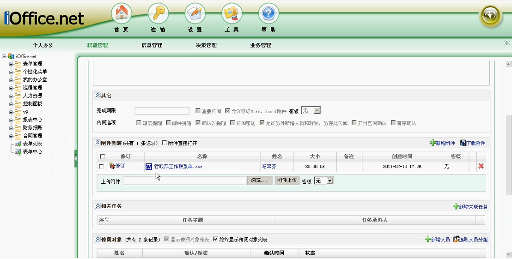
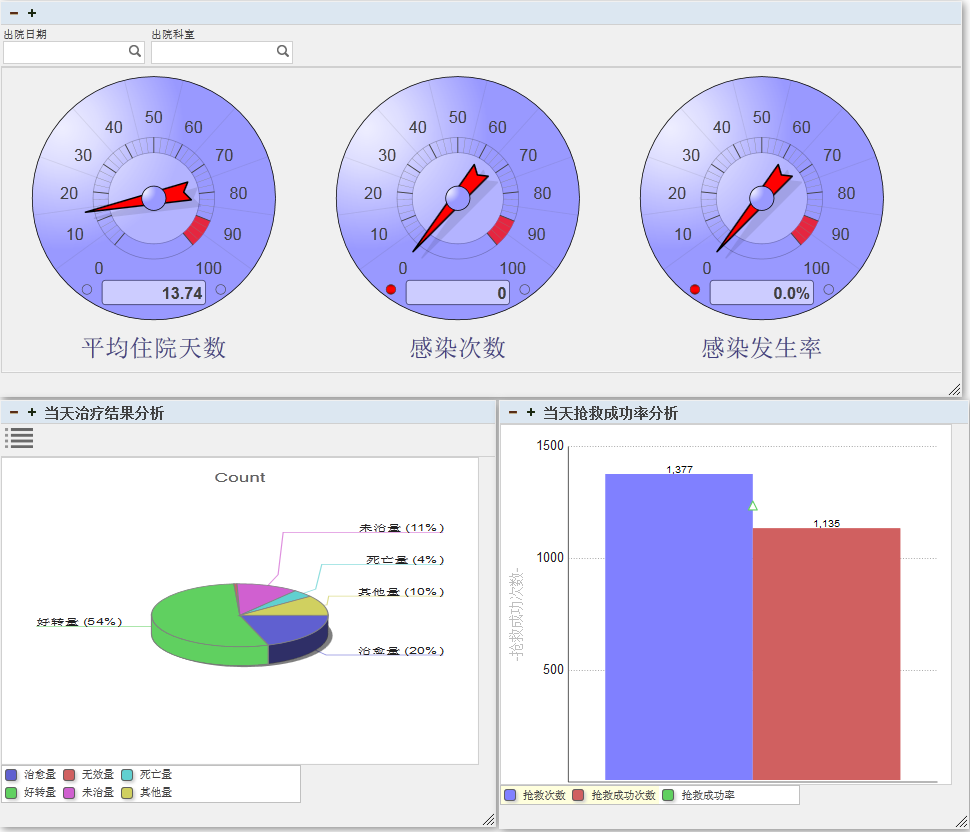

关于
胡 婷
一腔热血的激情，一个像素的执着 | Keep Calm and Carry On
前海军总医院信息科助理工程师
做事认真负责、脚踏实地、细心谨慎，具有较强的接受能力、自我学习能力。
电话： 15311430120 邮箱： julale@163.com.
个人简介
-
年龄
28岁
-
学历
本科
-
坐标
北京
-
状态
离职
教育经历： 2009.9-2013.8 河南大学 计算机科学与技术
培训经历： 2012.10-2013.1 江苏无锡培训中心 JavaSE+Struts+Spring+Hibernate
工作经历： 2013.10-2016.3 海军总医院计算机管理中心 Java软件工程师
2017.3-2018.8 北京金联汇通科技有限公司 Java软件工程师
参会经历： 2015.8.3-2015.8.5 江苏苏州 全国卫生信息技术交流大会
专业技能
1．熟悉XML、Html、JavaScript、JQuery、Ajax、BootStrap等前端技术。
2．熟悉Java、JSP/Servlet、Struts+Spring+Hibernate、SpringMVC+Mybatis框架。
3．熟练使用Editplus、DreamWeaver、NetBeans、Eclipse、MyEclipse等开发工具。
4．熟悉MySQL、SQLServer、oracle数据库，熟练使用Navicat、PLSQL管理工具。
5．熟练使用Visio、PowerDesigner等建模工具进行需求分析和模型设计。
6．熟悉Juit调试工具，SVN、Maven项目管理工具。
7．熟悉软件开发流程，具有良好的面向对象编程思想和良好的编码习惯。
项目和Demo
CSS3手绘彩虹(2016.12-2016.12)
主要利用css3变换实现旋转，css3动画实现彩虹色彩变换。
自己练习的DEMO，点击查看
JS实现图片裁剪(2017.2-2017.2)
1，练习JS鼠标onmousemove,onmousedown,onmouseup等事件，学习了W3C模型和IE浏览器的事情冒泡和事情捕获。
2，测试和掌握了js获取元素大小和尺寸的几种方式，clientWidth,scrollWidth,offsetWidth等之间的区别。
自己练习的DEMO，点击查看
院内网导航(2014.6-2014.6)
应用环境：WinXP
项目描述：做一个院内网导航，自适应浏览器和分辨率。
责任描述：
1.查询资料知bootmetro模板不错，研究源码，换掉icon和链接。
2.发现png图片在IE6下显示有问题，查资料了解学习相关的CSS hack知识。
3.在IETester下测试页面兼容性，最终如期完成。
在线订票系统(2012.10-2013.1)
项目架构：Struts+Spring+Hibernate、B/S
开发环境：Windows XP、JDK1.6
开发工具：MyEclipse、MySQL
项目描述：实时查票订票，生成购买订单。用户平台包括用户登录、票项查询、实时定票、订单查询、账户充值等功能，管理平台包括票项、用户、订单管理等。
责任描述：
1．用validate.js实现简单的表单验证，学习strut2获取表单数据的几种方式，后台添加用户，登录认证。
2．查询7天内可选票项，创建订单项。开始考虑不周，用数组存订单，由于后面涉及结账及订单查询改为中间表。
3．订单项CURD，利用HashMap实现，订单提交。
外接设备安全管理系统(2015.5-2015.7)
项目架构：Struts+Spring+Hibernate、B/S
开发环境：Windows XP、JDK1.7
开发工具：MyEclipse、MySQL
项目描述：使用电脑拷贝资料给医院的网络安全带来了隐患，要求禁用科室电脑U口，对于有开通需求的科室准予申请开通。
责任描述：
1．需求分析，主要包含前台申请和后台管理。设计相关的表字段和建表。
2．前台页面主要采用bootstrap斑马表格和validate.js实现验证。
3．项目最终完成了30多个科室的U口申请功能工作，且方便管理和维护。
网上商城(2016.5-2016.9)
项目架构：SpringMVC+Mybatis、B/S
开发环境：Windows XP、JDK1.7
开发工具：Eclipse EE、MySQL
项目描述：用户平台包括用户登录、商品查询、购买商品、生成订单、在线支付，管理平台包括用户、商品、订单管理等。
责任描述：
1．逆向工程生成需要的Mapper以及需要的POJO类。
2．首页新、热门商品查询、一级和二级分类商品查询，查询资料学习mybatis一对多映射和懒加载。
3．购物车CURD，利用HashMap实现，最终包装成PO类插入数据库生成订单。

SeID厂家证书申请项目（2017.4-2017.5）
项目架构：SpringMVC+Mybatis
开发环境：Windows XP、JDK1.7
开发工具：MyEclipse、MySQL
项目描述：为SeID厂家提供pfx加密证书申请和下载，支持批量申请和下载，LigerUI+Struts+Spring+Mybatis架构。
责任描述：
1．SeID申请页面、SeID申请列表页面、详细页面的代码编写。
2．使用struts框架获取前端数据并处理，使用线程池进行证书的批量生成。
3．使用mybatis进行数据库的相关操作。
二代证云解码平台（2017.6-2017.10）
项目架构：SpringMVC+Mybatis、B/S
开发环境：Windows XP、JDK1.7
开发工具：MyEclipse、MySQL
项目描述：应用机构使用，手机云端数据存储，公安数据接口等服务管理平台，使用LigerUI+Struts+Spring+Mybatis架构。
责任描述：
1．企业授权页面，使用.cer类型的公钥文件对应用进行加密授权，秘钥更换。
2．AP查询明细报、身份信息解码明细报表数据的查询和导出。
3．app端用户登录，访问控制权限接口，app端应用机构证书审批和申请列表查询。
4．公安数据同步接口。
应用机构与公安身份信息比对（2017.11-2018.2）
项目架构：SpringMVC+Mybatis
开发环境：Windows XP、JDK1.7
开发工具：MyEclipse、MySQL
项目描述：应用机构获取身份证、驾驶证等信息服务接口，及接口数据管理平台。
责任描述：
1．车辆信息查询接口，驾驶证信息查询接口，企业信息查询接口，根据指定参数获取数据源信息并处理。
2．接口测试用例，用例评审，脚本编写，功能测试。
公安eID核心业务系统（2018.3-2018.8）
项目架构：Struts+Spring+Hibernate、B/S
开发环境：Windows XP、JDK1.7
开发工具：MyEclipse、MySQL
项目描述：PKI、HMAC，签名验证、实名认证、实名登录服务，eID编码等应用机构与公安服务，及接口数据管理平台。
责任描述：
1．eIDBOSS运营管理平台测试用例，用例评审和功能测试。
2．eID核心业务系统接口测试用例，用例评审，脚本编写，功能测试和性能测试。
3．数据加密工具、数据同步等工具测试用例，用例评审和功能测试。
管理项目
-

项目描述：OA(2014.1-2016.3)，行政办公、手机短信等辅助业务的管理工具。接手前部分模块已上线，完成剩下模块的上线、系统接口、验收及相关数据查询统计。
责任描述：
1．模块的上线及测试制定详细计划与乙方随时联络，bug问题及时解决反馈，组织培训，解决bug13个页面细节改动20处，组织培训2次。
2．制定计划，联系乙方和第三方做接口，共完成2个短信接口，1个屏幕终端接口。
3．按照合同内容逐一验收功能模块，按期验收。 -

项目描述：数据挖掘(2014.8-2016.3)，分析挖掘门诊、住院、药品等数据，解决信息不透明和孤岛问题，二期项目，完成二期功能模块测试、上线及新需求。
责任描述： 由于乙方美工不足，从前端、后端到数据各个方面抓起。
1．提出页面结构，样式修改6处。
2．按二期合同测试功能模块，并积极组织讨论，因医保接口不开放基本完成验收。
3．新需求需要自己编写SQL，查遍了所有的数据结构表，学习SQL优化相关知识，提高了自己的SQL、数据整合分析及业务水平。 -
项目描述：手术麻醉(2014.1-2016.3)，采集监护仪等设备的数据，记录病人治疗的时间点及生命体征数据等，已验收，解决使用bug及新集成平台接口。
责任描述：
1．及时向乙方反馈bug,经常与临床和乙方沟通了解软件使用情况，由于乙方技术能力不足，系统时常出问题，采取维护记录表规避责任问题，明白了工作及管理流程的重要意义。
2．制定计划，联系乙方和第三方做接口，按期完成集成平台接口。